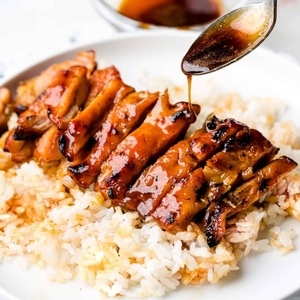

Target Audience
Our target audience are travelers around the world who want to visit Hong Kong but wonder what can they discovery here and allow the local store and restaurant to catch their attendtion .
Personas
Allow the traveler to get connect with the best local authentic restaurant
Family

Family who travel to Hong Kong able to use this website as guide to find beautiful landscape in Hong Kong
Scenarios:
1.What is the best area to get authentic Asian food?
2.Where are the beautiful landscape?
3.What is the best place for family to visit?
4.Is there any place that is not recommand for tourists to go?
What is the best pricing for food and hotel?